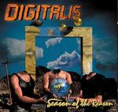

| Artist: | Digitalis |
| Title: | Season Of The Reason |
| Label: | Moonlight Company ML-DI-31 |
| Length(s): | 56 minutes |
| Year(s) of release: | 2002 |
| Month of review: | [05/2003] |
| 1) | Second Man | 4.12 |
| 2) | It's The Same All Over The World | 3.43 |
| 3) | When Two Become One | 4.04 |
| 4) | Far Island | 3.54 |
| 5) | The Draw | 3.53 |
| 6) | In A Little While | 3.41 |
| 7) | Thirteen | 3.57 |
| 8) | If I Could Have One Wish | 4.26 |
| 9) | Season Of The Reason | 3.55 |
| 10) | My Avatar | 4.04 |
| 11) | Dust And Paper | 3.54 |
| 12) | Odyssey | 3.39 |
| 13) | Lead Me On | 4.38 |
| 14) | Our Freedom | 4.10 |
It's The Same All Over The World stylistically is mostly the same, accept that Bonnell's is now regularly off key. This is pretty awful.
Things don't generally improve from here on. The drumming sounds highly unnatural. The best moment for Bonnell's vocals is when they're on key. The organ has its moments, but the synths tend to get tacky. The guitars create some momentary relief, but not enough by a margin.
Positive exception on all this is the instrumental sequencer with guitar track Thirteen.